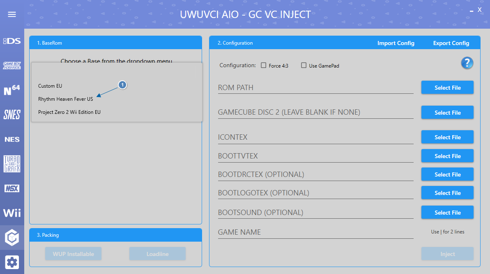
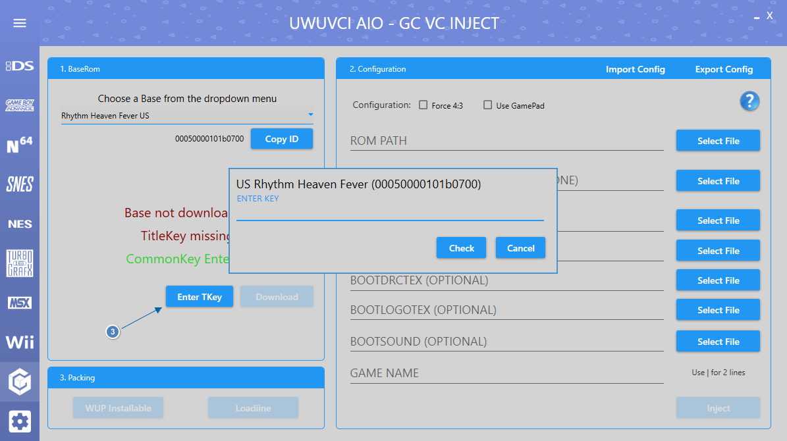
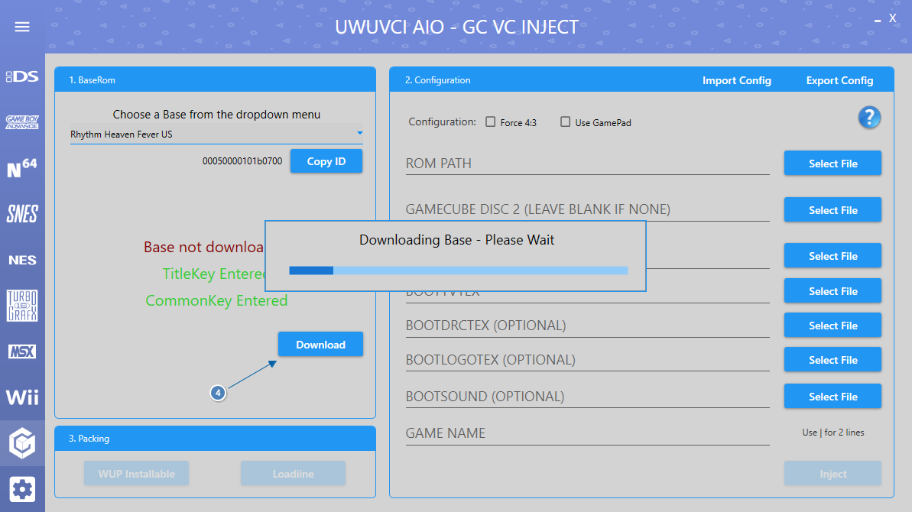

Gamecube Inject Help
Here is a quick guide to help you get started using UWUVCI.
Steps
- Choose a base from the dropdown box.

- If this is your first inject enter the WiiU common Key. (Google it).

- Enter the Title Key for the base you selected. (Google it).

- Click Download and wait for the Base to finish downloading.
